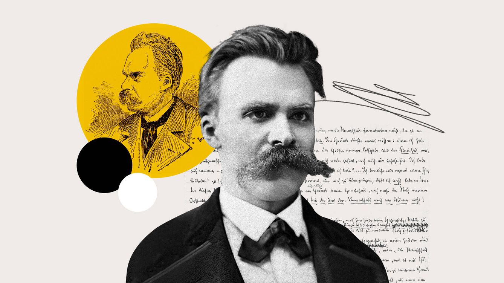

Explore the depths of philosophical thought and engage with a community of thinkers.
Latest Articles

Understanding Existentialism
Nietzsche's existential revolution: How his ideas of the Übermensch,
"God is dead," and amor fati challenge us to create meaning
in a world without absolutes. Discover why his radical philosophy
remains fiercely relevant today.
The Ethics of Artificial Intelligence
AI's ethical crossroads: From bias in algorithms to existential risks,
we examine the urgent moral dilemmas of artificial intelligence.
Who decides what’s "ethical" when machines think?
Philosophy of Mind
The philosophy of mind explores the nature of the mind, mental events, and consciousness.
Book Recommendations
The Myth of Sisyphus
In this seminal work, Albert Camus examines the philosophy of the absurd -
humanity's search for meaning in a meaningless universe. Through the myth of
Sisyphus, he argues we must embrace life's struggles while revolting against
despair. A cornerstone of existentialist thought.
Thus Spoke Zarathustra
"Thus Spoke Zarathustra" by Friedrich Nietzsche is a philosophical novel that follows the prophet Zarathustra as he shares his teachings on the Übermensch (Overman), the death of God, and the will to power. Through poetic and symbolic prose, Nietzsche explores themes of individualism, self-overcoming, and the creation of new values beyond good and evil.
Apology of Socrates
"The Apology of Socrates" by Plato is a philosophical dialogue that recounts Socrates' defense speech during his trial in Athens (399 BC). Accused of corrupting the youth and impiety, Socrates argues that true wisdom lies in recognizing one's ignorance. He rejects fear-based rhetoric, accepts his fate, and famously declares that "the unexamined life is not worth living." The work explores themes of...